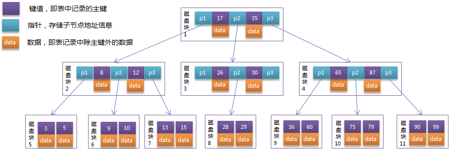

B Tree(平衡多路查找树)
目的：解决随机读取
https://baijiahao.baidu.com/s?id=1625857888377870075&wfr=spider&for=pc
劣势：从上一节中的B-Tree结构图中可以看到每个节点中不仅包含数据的key值，还有data值。而每一个页的存储空间是有限的，如果data数据较大时将会导致每个节点（即一个页）能存储的key的数量很小，当存储的数据量很大时同样会导致B-Tree的深度较大，增大查询时的磁盘I/O次数，进而影响查询效率。在B+Tree中，所有数据记录节点都是按照键值大小顺序存放在同一层的叶子节点上，而非叶子节点上只存储key值信息，这样可以大大加大每个节点存储的key值数量，降低B+Tree的高度。
磁盘
- heads/sectors/cylinders，分别就是磁头/扇区/柱面
sectors of 1 * 512 = 512 bytes（一个扇区512b）
block default4K = 8 * sectors（一个块=8个扇区）
# fdisk -l
Disk /dev/cciss/c0d0: 146.7 GB, 146778685440 bytes
255 heads, 63 sectors/track, 17844 cylinders
Units = cylinders of 16065 * 512 = 8225280 bytes
可以看到几个名词：heads/sectors/cylinders，分别就是磁头/扇区/柱面，每个扇区512byte（现在新的硬盘每个扇区有4K）了
硬盘容量就是heads*sectors*cylinders*512=255*63*17844*512=146771896320b=146.7G
- xfs 文件系统 block default 4k
文件系统
- xfs 文件系统 block default 4k

模拟查找关键字29的过程：
- 根据根节点找到磁盘块1，读入内存。【磁盘I/O操作第1次】
- 比较关键字29在区间（17,35），找到磁盘块1的指针P2。
- 根据P2指针找到磁盘块3，读入内存。【磁盘I/O操作第2次】
- 比较关键字29在区间（26,30），找到磁盘块3的指针P2。
- 根据P2指针找到磁盘块8，读入内存。【磁盘I/O操作第3次】
- 在磁盘块8中的关键字列表中找到关键字29。
分析上面过程，发现需要3次磁盘I/O操作，和3次内存查找操作。由于内存中的关键字是一个有序表结构，可以利用二分法查找提高效率。而3次磁盘I/O操作是影响整个B-Tree查找效率的决定因素。B-Tree相对于AVLTree缩减了节点个数，使每次磁盘I/O取到内存的数据都发挥了作用，从而提高了查询效率。
存在的问题
1、读写放大问题
为了方便分析，我们进行相关约定，B+ Tree的block size为B，故每个内部节点包含O(B)个子节点，叶子节点包含O(B)条数据，假设数据集大小为N，则B+ Tree的高度为O((log N/B)/(log B))
写放大：B+ Tree的每次insert都会在叶子节点写入数据，不论数据实际大小，每次都需要写入B，所以写放大是B
读放大：B+ Tree的一次查询需要从根节点一路查到具体的某个叶子节点，所以需要等于层数大小的I/O，也就是O((log N/B)/(log B))， 即写放大为O((log N/B)/(log B))
http://kernelmaker.github.io/Btree_LSM_FTI
《A Comparison of Fractal Trees to Log-Structured Merge (LSM) Trees》论文